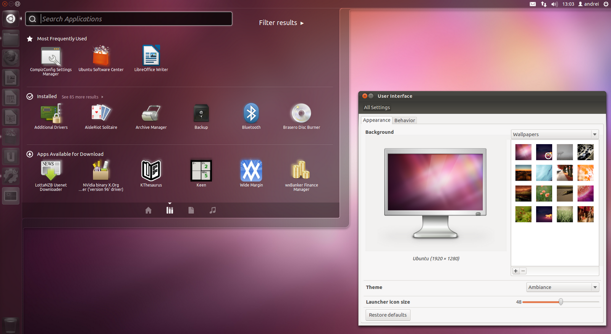

Ciência da Computação - DAW
O Ubuntu 12.04 beta
Nesta versão, o principal destaque é a integração do menu de aplicativos locais com a Centra de Programas do
Ubuntu, uma espécie de loja online, onde podem ser baixados novos aplicativos. Há também melhorias nas buscas
gráficas de pastas e arquivos.
Outro produto da Canonical é o Ubuntu for Androis, uma solução que leva o sistema aberto para smartphones hight-end.

Essa iniciativa baseia-se no fato de Ubuntu e Android serem versões do Linux e poderem compartilhar no smartphone o
mesmo núcleo do sistema operacional. conectado a um PC, o smartphone oferece o Ubuntu no desktop. O produto pode ser
usado como em um micro normal, com monitor grande e teclado, sem perder as funções de telefone. A grande vantagem segundo
a Canonical, é carregar apenas um dispositivo em vez de dois.
Texto condensado da revista InfoExame de abril de 2012. Escrito por Carlos Machado e Luiz Cruz.